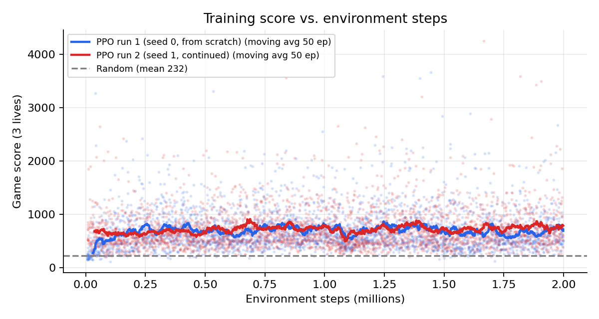
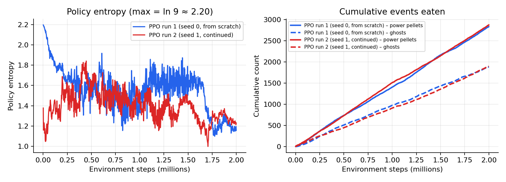
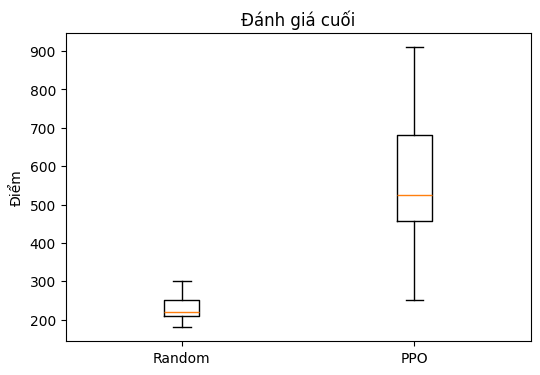

Học tăng cường sâu cho Ms. Pacman:
DQN và PPO trên môi trường Atari
Abstract
Dự án dùng trò chơi Atari Ms. Pacman làm bài tập thực hành để học học tăng cường sâu (deep reinforcement learning). Hai thuật toán được chọn là DQN (value-based, off-policy) và PPO (policy gradient, on-policy). Đến thời điểm này mới có PPO được huấn luyện hoàn chỉnh trên Ms. Pacman. DQN đã cài đặt xong nhưng chưa có kết quả trên môi trường này.
- Phương pháp: hai agent dùng chung một CNN kiểu Nature DQN, nhận 4 khung hình xám 84×84 xếp chồng, khác nhau ở đầu ra (đầu actor–critic cho PPO, đầu Q cho DQN).
- Môi trường: ALE/MsPacman-v5 (Gymnasium + Arcade Learning Environment), 9 hành động rời rạc, 16 môi trường chạy song song, huấn luyện trên một GPU RTX 3070 Ti Laptop.
- Kết quả tốt nhất cho đến nay (PPO, 2 triệu bước, hai lần chạy): điểm trung bình khi huấn luyện khoảng 690 đến 720 so với 232 của agent ngẫu nhiên. Cửa sổ trượt 50 ván tốt nhất đạt 914, ván đơn tốt nhất đạt 4250. Khi đánh giá riêng với seed cố định, mô hình PPO lần 1 đạt 546 ± 195 (tối đa 910, 10 ván).
- Nhận xét chính: điểm tăng nhanh trong khoảng 25 nghìn bước đầu rồi gần như đi ngang (khoảng 700), kể cả khi huấn luyện thêm 2 triệu bước. Nguyên nhân chưa được xác định.
1Introduction
1.1 Bối cảnh
Dạy máy chơi trò chơi điện tử là một bài toán quen thuộc của trí tuệ nhân tạo. Từ khi Mnih và cộng sự (2013, 2015) cho thấy một mạng neural tích chập có thể học chơi nhiều trò Atari chỉ từ điểm số và hình ảnh, bộ trò chơi Atari trở thành bài kiểm tra tiêu chuẩn cho học tăng cường sâu. Bài toán này không còn mới. Dự án này không nhằm đạt kết quả vượt trội so với các nghiên cứu trước. Mục đích là học và thực hành học tăng cường: cài đặt, huấn luyện và so sánh hai thuật toán kinh điển trên một môi trường đủ phức tạp để thấy được các khó khăn thực tế.
Ms. Pacman phù hợp cho mục đích đó vì quy tắc dễ hiểu (ăn chấm, tránh ma, ăn viên năng lượng để đuổi ma) nhưng tín hiệu thưởng thưa, có nhiều loại sự kiện với giá trị rất khác nhau (10, 50, 200 đến 1600 điểm), và ma có hành vi khác nhau.
1.2 Vấn đề thách thức
Nhóm chưa tự định nghĩa các thách thức của bài toán. Phần này sẽ được điền ở bản sau. Dữ kiện đã quan sát được, để làm chất liệu khi viết: điểm huấn luyện đi ngang quanh 700 từ rất sớm (mục 5), và chưa rõ nguyên nhân là do thiết kế reward, khám phá, hay giới hạn ngân sách bước.
1.3 Mục tiêu và phạm vi
- Mục tiêu: (i) cài đặt DQN và PPO từ đầu bằng PyTorch, không dùng thư viện thuật toán có sẵn; (ii) huấn luyện cả hai trên Ms. Pacman với cùng môi trường, tiền xử lý, kiến trúc mạng và ngân sách bước; (iii) so sánh về điểm số, độ ổn định và hiệu quả mẫu.
- Phạm vi: chỉ dùng đầu vào là ảnh điểm ảnh; không dùng đặc trưng thiết kế tay. Một môi trường (ALE/MsPacman-v5). Chưa đặt mục tiêu đạt mức điểm của con người.
- Trạng thái hiện tại: PPO đã huấn luyện; DQN đã cài đặt nhưng chưa chạy trên Ms. Pacman; chưa so sánh được hai phương pháp.
2Background / Theoretical Framework
2.1 Quá trình quyết định Markov
Bài toán được mô hình hóa là một MDP \((\mathcal S,\mathcal A,P,r,\gamma)\). Tại mỗi bước agent quan sát \(s_t\), chọn \(a_t\sim\pi(\cdot\mid s_t)\), nhận \(r_t\) và chuyển sang \(s_{t+1}\). Mục tiêu là tối đa hóa tổng thưởng chiết khấu kỳ vọng \(G_t=\sum_{k\ge0}\gamma^k r_{t+k}\). Hàm giá trị trạng thái và hành động là $$V^\pi(s)=\mathbb E_\pi[G_t\mid s_t=s],\qquad Q^\pi(s,a)=\mathbb E_\pi[G_t\mid s_t=s,a_t=a].$$ Ở đây \(\gamma=0.99\) cho cả hai thuật toán (Sutton & Barto, 2018).
2.2 Deep Q-Network (DQN)
DQN xấp xỉ hàm giá trị hành động tối ưu \(Q^*(s,a)\) bằng mạng neural \(Q_\theta\), dựa trên phương trình tối ưu Bellman $$Q^*(s,a)=\mathbb E\big[r+\gamma\max_{a'}Q^*(s',a')\big].$$ Khi đã có \(Q\), policy là \(a=\arg\max_a Q(s,a)\). Huấn luyện bằng hồi quy bán gradient trên đích $$y=r+\gamma\,(1-d)\,\max_{a'}Q_{\theta^-}(s',a'),\qquad \mathcal L(\theta)=\mathbb E_{(s,a,r,s',d)\sim\mathcal D}\big[\mathrm{Huber}\big(Q_\theta(s,a),\,y\big)\big].$$ Hai kỹ thuật giúp ổn định (Mnih et al., 2015):
- Experience replay: lưu các chuyển tiếp \((s,a,r,s',d)\) vào bộ đệm \(\mathcal D\) và lấy mẫu ngẫu nhiên khi học. Việc này phá tương quan giữa các mẫu liên tiếp và dùng lại mỗi mẫu nhiều lần.
- Target network: tham số \(\theta^-\) là bản sao của \(\theta\), chỉ được cập nhật định kỳ. Nhờ đó đích \(y\) không dịch chuyển sau mỗi bước gradient.
Khám phá dùng \(\epsilon\)-greedy: với xác suất \(\epsilon\) chọn hành động ngẫu nhiên. Bản cài đặt ở đây là DQN gốc, chưa có Double DQN, Dueling hay Prioritized Replay.
2.3 Proximal Policy Optimization (PPO)
PPO (Schulman et al., 2017) học trực tiếp policy \(\pi_\theta(a\mid s)\) và một critic \(V_\phi(s)\). Mỗi vòng lặp thu một rollout bằng policy hiện tại, tính advantage bằng GAE (Schulman et al., 2016) $$\delta_t=r_t+\gamma V(s_{t+1})-V(s_t),\qquad \hat A_t=\sum_{l\ge0}(\gamma\lambda)^l\,\delta_{t+l},$$ rồi tối ưu hàm mục tiêu bị cắt. Với tỷ lệ xác suất \(\rho_t(\theta)=\pi_\theta(a_t\mid s_t)/\pi_{\theta_{old}}(a_t\mid s_t)\): $$L^{CLIP}(\theta)=\mathbb E_t\Big[\min\big(\rho_t\hat A_t,\ \mathrm{clip}(\rho_t,1-\varepsilon,1+\varepsilon)\hat A_t\big)\Big].$$ Phần cắt chặn gradient khi policy mới lệch quá xa policy cũ, cho phép cập nhật nhiều epoch trên cùng rollout. Hàm loss tổng gồm ba thành phần: $$L=-L^{CLIP}+c_1\,\mathbb E\big[(V_\phi(s_t)-\hat R_t)^2\big]-c_2\,\mathbb E\big[\mathcal H(\pi_\theta(\cdot\mid s_t))\big],$$ trong đó \(\hat R_t=\hat A_t+V(s_t)\) và số hạng entropy \(\mathcal H\) khuyến khích khám phá.
2.4 So sánh khái quát
| Tiêu chí | DQN | PPO |
|---|---|---|
| Họ thuật toán | Value-based | Policy gradient (actor–critic) |
| Dữ liệu | Off-policy, dùng lại qua replay buffer | On-policy, bỏ rollout sau khi dùng |
| Khám phá | \(\epsilon\)-greedy | Lấy mẫu từ policy + entropy bonus |
| Cơ chế ổn định | Target network, Huber loss, gradient clipping | Clipped objective, GAE, gradient clipping |
3Dataset / State Representation & Features
Học tăng cường không có tập dữ liệu cố định. Dữ liệu được sinh ra khi agent tương tác với môi trường ALE/MsPacman-v5 (Bellemare et al., 2013), cài qua Gymnasium (Towers et al., 2023) và ale-py.
3.1 Từ khung hình game thành đầu vào của mô hình
Agent không nhận cấu trúc lưới tọa độ hay đặc trưng trích xuất sẵn. Đầu vào là ảnh thô được tiền xử lý theo quy trình chuẩn của DeepMind, cho cả hai thuật toán:
- Quan sát gốc: ảnh RGB \(210\times160\times3\).
- Frame skip = 4: mỗi hành động lặp lại 4 khung hình, reward cộng dồn. Mỗi "bước" của agent tương ứng 4 frame game.
- Xám hóa và đổi kích thước về \(84\times84\).
- Frame stack = 4: xếp 4 khung hình gần nhất thành tensor \(4\times84\times84\) (uint8, chia 255 khi đưa vào mạng). Một khung hình đơn không cho biết hướng di chuyển; bốn khung hình thì có.
- No-op reset tối đa 30 bước đầu mỗi ván để các ván khởi đầu hơi khác nhau.
- Tắt sticky action (repeat_action_probability=0) và dùng bộ hành động tối giản: 9 hành động (NOOP và 8 hướng).
3.2 Các thành phần trạng thái
Vì đầu vào là điểm ảnh, các thành phần dưới đây không được mã hóa thành biến riêng. Mạng phải tự học chúng từ ảnh. Bảng 2 ghi lại thành phần nào được thể hiện ra sao.
| Thành phần | Có trong đầu vào? | Cách thể hiện / ghi chú |
|---|---|---|
| Vị trí Ms. Pacman | Có, ngầm | Sprite trong ảnh 84×84 |
| Vị trí các con ma | Có, ngầm | Sprite; hướng di chuyển suy ra từ 4 frame liên tiếp |
| Trạng thái ma (săn đuổi / sợ hãi) | Có, ngầm | Ma sợ hãi đổi màu trong ảnh gốc. Sau khi xám hóa chỉ còn khác biệt về độ sáng. Chưa kiểm tra mạng có phân biệt được hay không (xem TODO mục 6). |
| Chấm và viên năng lượng còn lại | Có, ngầm | Các điểm sáng trên mê cung; kích thước sau resize rất nhỏ |
| Điểm số hiện tại | Không | Không đưa vào mạng. Điểm chỉ xuất hiện gián tiếp qua tín hiệu reward khi học. |
| Số mạng còn lại | Có, ngầm | Biểu tượng mạng ở cuối ảnh gốc (có thể đã mờ sau resize) |
3.3 Reward khi học và điểm khi báo cáo
Điểm gốc của game có thang rất rộng (10, 50, 200 đến 1600). Để gradient ổn định, khi học reward được nén theo thang log: \(\tilde r=\ln(1+r/10)\). Cụ thể: chấm 10 điểm → 0.69; viên năng lượng 50 → 1.79; ăn ma 200, 400, 800, 1600 → 3.04, 3.71, 4.39, 5.08. Mọi điểm báo cáo trong tài liệu này đều là điểm thật của game, cộng dồn qua cả 3 mạng.
Khi học, môi trường dùng wrapper EpisodicLife: mất một mạng thì báo terminated=True để agent thấy cái chết có giá. Game chỉ reset thật khi hết 3 mạng. Khi đánh giá, wrapper này tắt và chạy đủ một ván 3 mạng (tối đa 4500 bước).
Số viên năng lượng và số con ma ăn được được đếm từ reward thật (đúng 50 và thuộc {200, 400, 800, 1600}). Cách đếm này có sai số nhỏ: trái cây 200 điểm (từ màn 2) có thể bị tính nhầm là ma.
4Methodology / Technical Approach
4.1 Model Architecture
Cả hai agent dùng chung thân CNN của Nature DQN (Mnih et al., 2015); chỉ phần đầu ra khác nhau.
input (4, 84, 84) uint8 → chia 255
Conv2d 4→32, 8×8, stride 4 + ReLU → (32, 20, 20)
Conv2d 32→64, 4×4, stride 2 + ReLU → (64, 9, 9)
Conv2d 64→64, 3×3, stride 1 + ReLU → (64, 7, 7)
Flatten (3136) → Linear 512 + ReLU (thân dùng chung, 1 684 128 tham số)
├─ PPO: actor Linear 512→9 (logits, Categorical) + critic Linear 512→1 (tổng 1 689 258)
└─ DQN: head Linear 512→9 (giá trị Q của 9 hành động) (tổng 1 688 745)PPO khởi tạo trực giao: thân với gain \(\sqrt2\), lớp actor với gain 0.01 (policy ban đầu gần phân phối đều) và critic với gain 1.0.
4.2 Hạ tầng huấn luyện
Nút thắt tốc độ là CPU chạy emulator Atari, không phải GPU. Cả hai thuật toán dùng 16 môi trường song song (mỗi môi trường một process, AsyncVectorEnv) chia thành 2 nhóm chạy xen kẽ: trong lúc CPU chạy nhóm này thì GPU tính hành động cho nhóm kia. Với DQN, bước cập nhật mạng cũng chạy chồng lên lúc emulator đang chạy. Mã nguồn nằm trong thư viện pacman_rl do nhóm tách ra từ notebook.
4.3 Training Process
PPO
- Thu thập rollout: 16 môi trường × 128 bước = 2048 mẫu mỗi lần cập nhật, lưu \(\log\pi_{old}\) và \(V\).
- GAE: tính advantage lùi từ cuối rollout với \(\gamma=0.99\), \(\lambda=0.95\).
- Cập nhật: 4 epoch, 4 minibatch (512 mẫu), mỗi minibatch chuẩn hóa advantage. Loss gồm clipped policy loss, value loss (MSE) và entropy bonus. Cắt gradient theo chuẩn 0.5. Learning rate giảm tuyến tính về 0.
Một lần huấn luyện 2M bước tương ứng 976 lần cập nhật.
DQN: cơ chế học và Target Network
- Thu thập: mỗi vòng lặp 16 môi trường mỗi nơi đi một bước; 16 chuyển tiếp được ghi vào replay buffer. Hành động chọn \(\epsilon\)-greedy, \(\epsilon\) giảm tuyến tính từ 1.0 xuống 0.05 trong 5% đầu của tổng số bước.
- Replay buffer 200 000 chuyển tiếp. Để tiết kiệm RAM (khoảng 1.4 GB thay vì gấp 8 lần), buffer chỉ lưu khung hình mới nhất của mỗi bước và dựng lại stack 4 frame khi lấy mẫu; mỗi môi trường là một "cột" riêng nên stack không trộn frame của hai ván khác nhau.
- Cập nhật: sau 20 000 bước đầu thu thập, mỗi vòng lặp thực hiện một bước gradient trên minibatch 128 (tỷ lệ tái sử dụng mẫu 8, tương đương DQN gốc dùng batch 32 mỗi 4 bước). Loss Huber, cắt gradient theo chuẩn 10, optimizer Adam.
- Target network: bản sao \(Q_{\theta^-}\) được chép lại hoàn toàn từ \(Q_\theta\) mỗi 10 000 bước môi trường (cập nhật cứng). Đích học \(y=r+\gamma(1-d)\max_{a'}Q_{\theta^-}(s',a')\).
4.4 Hyperparameters
| Siêu tham số | PPO | DQN |
|---|---|---|
| Tổng số bước (đã chạy / cấu hình) | 2 000 000 (đã chạy) | 10 000 000 (cấu hình mặc định, chưa chạy) |
| Số môi trường song song | 16 | 16 |
| Optimizer | Adam, eps = 1e-5 | Adam |
| Learning rate | 2.5e-4, giảm tuyến tính về 0 | 1e-4, cố định |
| Discount \(\gamma\) | 0.99 | 0.99 |
| GAE \(\lambda\) | 0.95 | – |
| Clip \(\varepsilon\) | 0.1 | – |
| Hệ số value / entropy (\(c_1\), \(c_2\)) | 0.5 / 0.01 | – |
| Rollout / epoch / minibatch | 128 bước / 4 / 4 (512 mẫu) | – |
| Replay buffer | – | 200 000 |
| Batch / số bước gradient mỗi vòng | – | 128 / 1 |
| Bắt đầu học sau | – | 20 000 bước |
| Cập nhật target network | – | mỗi 10 000 bước (cứng) |
| \(\epsilon\) bắt đầu → kết thúc | – | 1.0 → 0.05, trong 5% đầu |
| Cắt gradient (chuẩn) | 0.5 | 10 |
| Hàm loss giá trị | MSE | Huber (smooth L1) |
| Reward khi học | \(\ln(1+r/10)\) + EpisodicLife | |
| Seed | 0 (lần 1), 1 (lần 2) | 0 |
5Experiments, Results & Discussion
5.1 Thiết lập thí nghiệm
Phần cứng: GPU NVIDIA GeForce RTX 3070 Ti Laptop, PyTorch 2.3.1 (CUDA 12.1), Python 3.10, gymnasium 0.29.1. Đã thực hiện hai lần chạy PPO, mỗi lần 2 triệu bước (khoảng 8 triệu frame game, 976 lần cập nhật):
- Lần 1: huấn luyện từ đầu, seed 0, 3158 ván hoàn chỉnh.
- Lần 2: khởi tạo từ trọng số cuối của lần 1 rồi huấn luyện thêm 2M bước với seed 1 và lịch learning rate bắt đầu lại từ 2.5e-4, 3086 ván. Đây là lần huấn luyện tiếp, không phải một seed độc lập.
Tốc độ trung bình khoảng 1100 đến 2200 bước/giây tùy tải máy. DQN chưa được huấn luyện trên Ms. Pacman, nên các phần dưới đây chỉ nói về PPO.
5.2 Training curves


5.3 Performance metrics
| Chỉ số (điểm huấn luyện) | PPO lần 1 | PPO lần 2 |
|---|---|---|
| Số ván | 3158 | 3086 |
| Điểm trung bình, toàn bộ | 690.7 | 720.3 |
| Điểm trung vị | 600 | 640 |
| Điểm trung bình, 100 ván cuối | 727.4 | 767.3 |
| Trung bình trượt 50 ván cao nhất | 867.8 (ở 1.25M bước) | 914.2 (ở 0.69M bước) |
| Ván đơn cao nhất | 3660 | 4250 |
| Trung bình theo từng phần tư (Q1 → Q4) | 655 → 717 → 724 → 667 | 661 → 758 → 717 → 746 |
| Viên năng lượng / ma ăn được (tổng) | 2831 / 1880 | 2872 / 1900 |
| Entropy cuối | 1.16 | 1.23 |
Đánh giá riêng
Mô hình PPO lần 1 được chấm trên 10 ván với seed cố định 1000 đến 1009, lấy mẫu từ policy, tắt EpisodicLife (ván đủ 3 mạng). Agent ngẫu nhiên chạy 5 ván.
| Phương pháp | Số ván | Trung bình | Độ lệch chuẩn | Tối đa |
|---|---|---|---|---|
| Random | 5 | 232 | 41 | 300 |
| PPO (lần 1) | 10 | 546 | 195 | 910 |
| DQN | chưa có kết quả | |||

5.4 Comparative analysis
- PPO so với ngẫu nhiên: PPO cao hơn rõ rệt (546 so với 232 khi đánh giá; khoảng 700 so với 232 khi huấn luyện). Mẫu của agent ngẫu nhiên chỉ có 5 ván, nên con số 232 chỉ là ước lượng sơ bộ (ở notebook thử nghiệm trước, 5 ván ngẫu nhiên khác cho trung bình 198).
- Lần 1 so với lần 2: lần 2 cao hơn một chút (720 so với 691 điểm trung bình). Chênh lệch này nhỏ so với độ phân tán của điểm từng ván và chưa qua kiểm định thống kê, nên chưa đủ để nói huấn luyện thêm 2M bước có cải thiện. Điểm đầu của lần 2 cao ngay từ đầu (697 trong 100 ván đầu so với 411 của lần 1) vì kế thừa trọng số.
- PPO so với DQN: chưa so sánh được. Khi DQN có kết quả cần lưu ý rằng điểm huấn luyện của DQN còn bị \(\epsilon\)-greedy kéo xuống; nên so sánh bằng điểm đánh giá cùng seed.
5.5 Qualitative analysis
Nhóm mới xem hai ván của mô hình lần 1 (500 và 330 điểm, 800 và 619 bước) và chưa ghi lại video hay phân tích hành vi một cách có hệ thống. Vì vậy chỉ rút ra được nhận xét dựa trên các số đếm:
- Agent có ăn ma: tổng số ma ăn được bằng khoảng 0.66 lần số viên năng lượng ở cả hai lần chạy. Một viên năng lượng cho phép ăn tối đa 4 ma, nên đây là dấu hiệu agent có khai thác viên năng lượng để săn ma chứ không chỉ ăn chấm. Con số có thể hơi cao do trái cây bị đếm nhầm là ma (mục 3.3).
- Số sự kiện tăng gần tuyến tính theo số bước (Hình 2), tức tốc độ ăn gần như không đổi trong suốt quá trình huấn luyện, phù hợp với đường điểm đi ngang.
- Policy chưa tiền định: entropy còn khoảng 1.2 so với tối đa 2.20, tức policy còn lấy mẫu khá ngẫu nhiên giữa các hành động.
5.6 Thảo luận
Quan sát đáng chú ý nhất là điểm đi ngang quanh 700 từ rất sớm, không tăng thêm cả khi gấp đôi số bước huấn luyện. Dưới đây là các giả thuyết, chưa được kiểm chứng:
- Ngân sách 2M bước (8M frame) là rất nhỏ so với các nghiên cứu Atari thường dùng (hàng chục triệu bước). Agent có thể chưa vượt qua giai đoạn học hành vi cơ bản.
- Reward thang log làm chênh lệch giữa chấm (0.69) và ma (3 đến 5) thu hẹp lại, có thể làm yếu động cơ săn ma.
- Agent có thể chưa học né ma hiệu quả; điểm có thể bị giới hạn bởi số mạng chứ không phải bởi khả năng ăn.
- Khả năng phân biệt ma sợ hãi sau khi xám hóa còn chưa rõ.
Điểm đánh giá (546) thấp hơn điểm huấn luyện (khoảng 700). Với 10 ván và độ lệch chuẩn 195, sai số chuẩn khoảng 62, nên khoảng cách này lớn hơn dao động ngẫu nhiên đơn thuần một chút. Cần chạy nhiều ván hơn trước khi kết luận có chênh lệch hệ thống hay không.
6Conclusion & Việc cần làm tiếp theo
6.1 Kết luận tạm thời
Đã xây dựng được hệ thống huấn luyện DQN và PPO trên Ms. Pacman (tiền xử lý Atari chuẩn, CNN dùng chung, môi trường song song, thư viện pacman_rl). PPO được huấn luyện 2 lần × 2M bước và học được hành vi tốt hơn rõ rệt so với ngẫu nhiên (khoảng 700 so với 232 điểm; đánh giá riêng 546 ± 195), nhưng tiến bộ dừng sớm ở mức đó. DQN chưa có kết quả nên chưa trả lời được câu hỏi chính của dự án là so sánh hai phương pháp.
6.2 Việc cần làm
- Huấn luyện DQN trên Ms. Pacman với cùng ngân sách 2M bước để so sánh công bằng với PPO (cấu hình mặc định đang để 10M). Theo dõi q_mean và loss xem có phân kỳ không.
- Đánh giá lại: chấm mô hình PPO lần 2, tăng số ván đánh giá, và so sánh sampling với greedy.
- Thí nghiệm reward âm theo thời gian (ý tưởng đã có trong TODO_ms_pacman.md): so sánh ba cấu hình (không phạt; phạt nhỏ mỗi bước khoảng −0.01 đến −0.02 trên thang log; phạt khi "đứng bí" 50 đến 100 bước liên tiếp không có reward dương), mỗi cấu hình 3 seed. Lưu ý tương tác với EpisodicLife và giữ điểm báo cáo là điểm thật.
- Nhiều seed: chạy 3 đến 5 seed độc lập cho mỗi thuật toán, vẽ trung bình ± độ lệch chuẩn.
- Phân tích định tính: ghi video các ván chơi, thống kê nguyên nhân mất mạng, kiểm tra hành vi với ma sợ hãi, cân nhắc giữ màu thay vì xám hóa.
- Xác định nguyên nhân điểm đi ngang bằng các giả thuyết ở mục 5.6.
- Điền mục 1.2 (vấn đề thách thức) sau khi nhóm thống nhất.
- Nếu còn thời gian: Double DQN, Dueling hoặc Prioritized Replay như các thí nghiệm bóc tách (ablation).
7References
- [1] Bellemare, M. G., Naddaf, Y., Veness, J., & Bowling, M. (2013). The Arcade Learning Environment: An evaluation platform for general agents. Journal of Artificial Intelligence Research, 47, 253–279.
- [2] Mnih, V., Kavukcuoglu, K., Silver, D., Graves, A., Antonoglou, I., Wierstra, D., & Riedmiller, M. (2013). Playing Atari with deep reinforcement learning. arXiv:1312.5602.
- [3] Mnih, V., Kavukcuoglu, K., Silver, D., et al. (2015). Human-level control through deep reinforcement learning. Nature, 518, 529–533.
- [4] Schulman, J., Wolski, F., Dhariwal, P., Radford, A., & Klimov, O. (2017). Proximal policy optimization algorithms. arXiv:1707.06347.
- [5] Schulman, J., Moritz, P., Levine, S., Jordan, M., & Abbeel, P. (2016). High-dimensional continuous control using generalized advantage estimation. ICLR.
- [6] Sutton, R. S., & Barto, A. G. (2018). Reinforcement Learning: An Introduction (2nd ed.). MIT Press.
- [7] Machado, M. C., Bellemare, M. G., Talvitie, E., Veness, J., Hausknecht, M., & Bowling, M. (2018). Revisiting the Arcade Learning Environment: Evaluation protocols and open problems for general agents. JAIR, 61, 523–562.
- [8] Towers, M., Terry, J. K., Kwiatkowski, A., et al. (2023). Gymnasium. Zenodo. https://doi.org/10.5281/zenodo.8127026
- [9] Paszke, A., Gross, S., Massa, F., et al. (2019). PyTorch: An imperative style, high-performance deep learning library. NeurIPS.
- [10] Henderson, P., Islam, R., Bachman, P., Pineau, J., Precup, D., & Meger, D. (2018). Deep reinforcement learning that matters. AAAI.